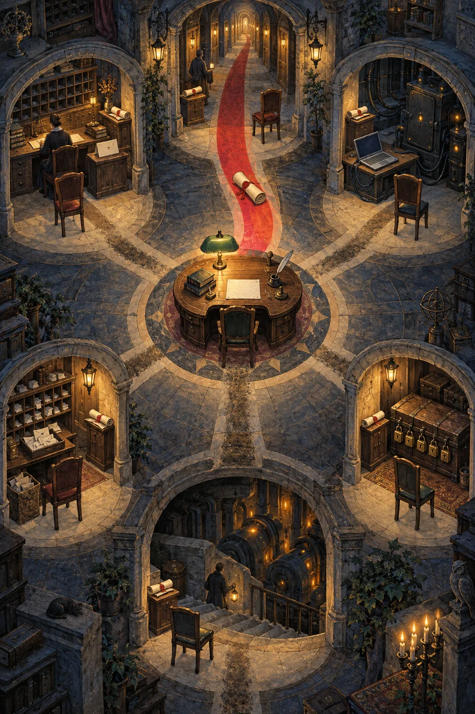
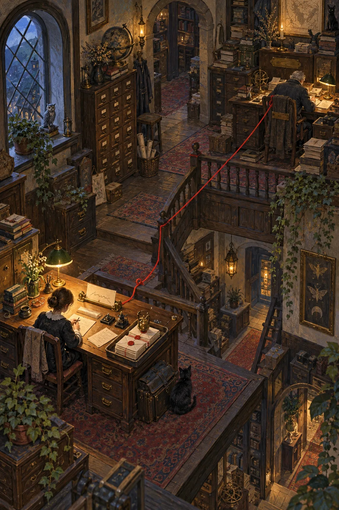
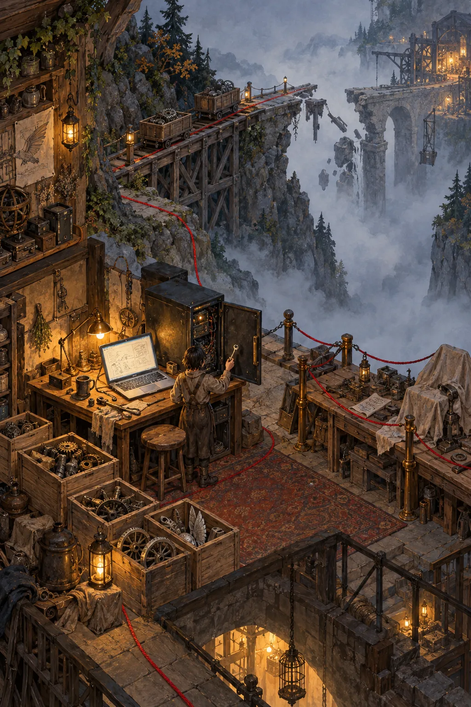
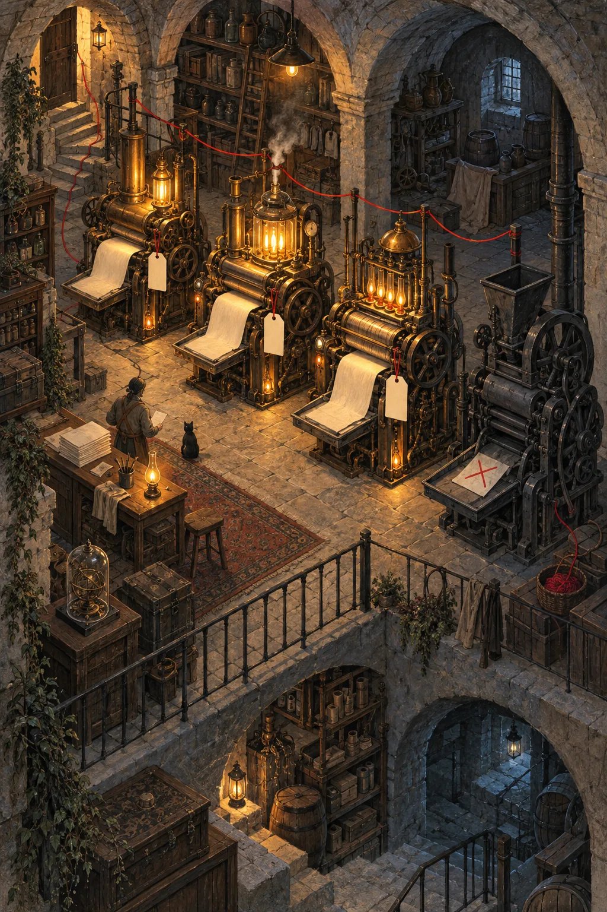
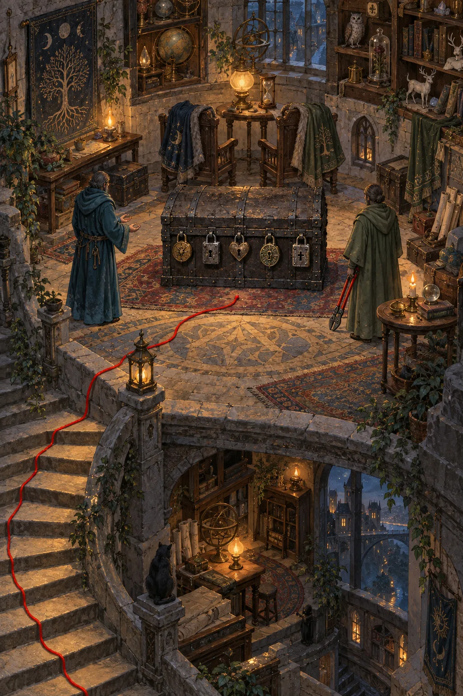
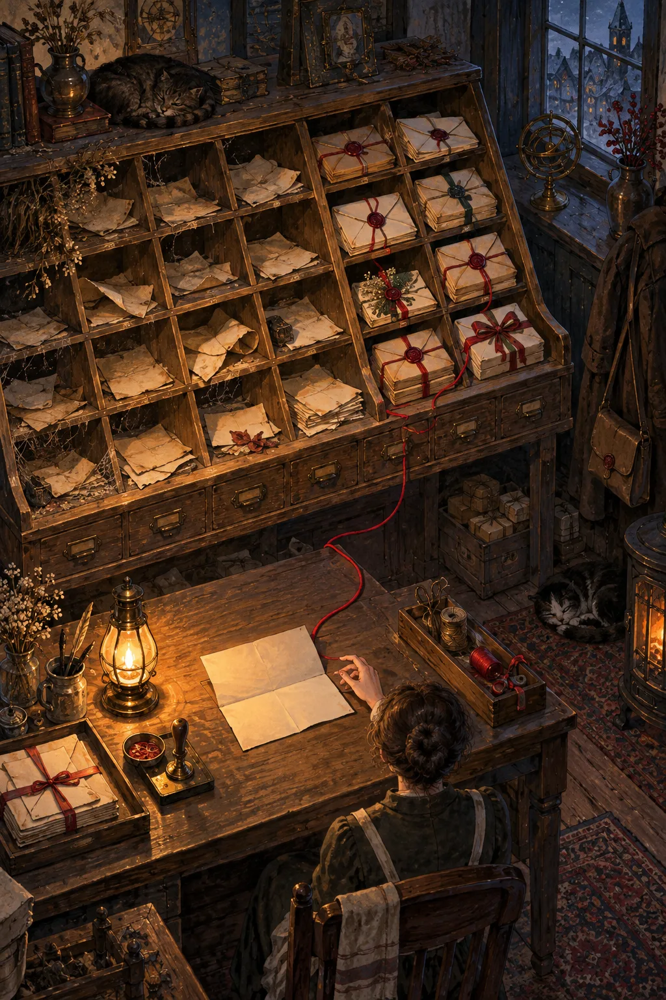
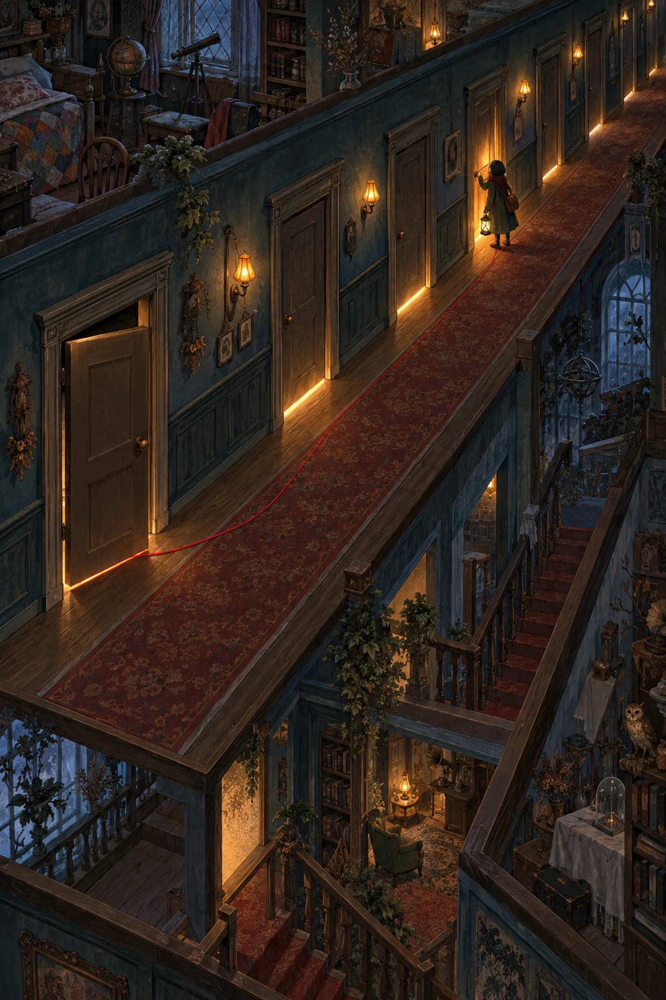
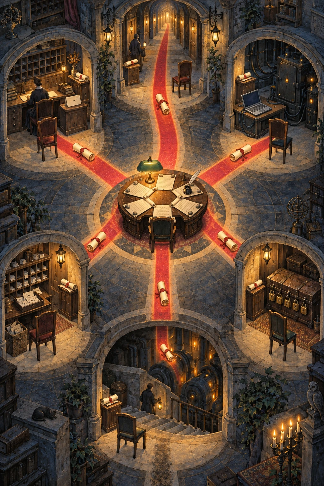

Page 1 · Illustration
The registry hall
The scene
A lamplit registry hall, seen as a cutaway. At its centre is the living's desk: a green-shaded lamp, an inkwell, and a blank answer sheet, with no one seated. Six alcoves ring the hall, each holding a sealed scroll and an empty chair that waits. One holds a clerk's desk with an unsigned name card; one, a laptop cabled to a dark machine; one, a cellar of machines with blank tags; one, a chest with five padlocks; one, a post-room tray; one, a corridor of lit doors. Worn paths run from every alcove to the desk and back, and one fat red hand-coloured path is carrying a scroll in.
Page 2
The six questions
Six questions are holding up live work today. Each one gets a page. A comment on any page is an answer, and one word is enough.
- 1When does a new seat start receiving, and what happens to the seat it replaces?
- 2Where do we build while the only builder can't be reached?
- 3How do the running services get back to known source, and what proves them?
- 4Who owns the Flow source, and may the Field break the five orphaned locks?
- 5What happens to a message that can't be delivered yet?
- 6When is an old flow closed, and by whom?
Left out on purpose: topics you haven't touched that block nothing today, such as Tailscale or Headscale, the capture-audit repairs, the distillation proposals and the transcript tool. They stay in the records.

Page 3 · Illustration
The unsigned name card
The scene
A newly seated clerk at a desk whose name card has been written but not yet signed. Beside it, a tray of sealed letters is held until the clerk's first words. A red thread already runs from this desk to the predecessor's desk across the room, where the old address plate still hangs.
Page 4 · Question 1
When does a new seat start receiving?
When a seat is refreshed, the new one is launched and registered first, and only then speaks. That leaves two gaps:
- Between being registered and its first words, does the new seat count as "unconfirmed" while messages to it wait?
- The successor link is recorded at once. But when does mail to the old seat start going to the new one?
Recommendation from Psyche High 836818, not a decision: yes, a registered seat counts as unconfirmed while its messages are held. Record the successor link now and turn forwarding on later.
"If there's no registry or if the registry says "in transition" or something, then the message can sort of be held if there's a message passing anyway, right? We can wait a few seconds at least to see if there's a new flow."
-- living, 2026-09-23.
Tension: the recommendation keeps the old seat reachable until it is retired separately. Your words on page 14 lean toward closing it.

Page 5 · Illustration
The washed-out road
The scene
A short cable runs from a lit laptop to a dark machine, and a hand holding a key shows that the near door opens. But the high road above, the one the builds travel, has washed out. Crates of source code sit unbuilt at the laptop's feet, beside a workbench nobody is allowed to use.
Page 6 · Question 2
Where do we build?
Prometheus is our only builder and cache. Its build and cache ports can't be reached over the usual route. A direct cable reaches the machine, but not its workshop. Building on ouranos itself is not allowed today.
- Add a second remote builder?
- Allow a build on ouranos, just for proof of concept?
- Or wait for the route repair, which the Field is working on?
No one has made a recommendation. Field High 0ad137 witnessed the state at about 22:42 UTC; the repair is pending.

Page 7 · Illustration
The cellar of untagged machines
The scene
Three machines hum in a stone cellar, each with a blank tag where the name of its source should be written. A fourth machine stands dark. On its intake tray lies a sheet stamped back with a refusal.
Page 8 · Question 3
Known source for the running services
Three services run on ouranos from binaries nobody can trace back to source: Orchestrate, Flow and Lojix. The fourth, Message, has been down since 12:10 today; its configuration is refused with "expected Struct, found Meaning".
- Redeploy all four from known revisions?
- What is the first end-to-end proof: one low seat refreshed through Flow, with held messages draining?
- May a release land with its failing tests marked?
"We'll plug message into that after we deploy Flow."
-- living, recorded by Psyche High 836818.
No one has made a recommendation.

Page 9 · Illustration
The chest with five padlocks
The scene
A chest marked Flow is shut with five padlocks. The chairs of its two keepers stand empty, their cloaks still on the backs. A Mind keeper waits with open hands. A Field hand holds bolt cutters, lowered, waiting for a word.
Page 10 · Question 4
Who owns the Flow source?
Flow's source is split across two unmerged slices. Two flows that no longer answer hold five locks on it.
- Is Mind High 47764b the one owner of the Flow and Message sources?
- May the Field release the five orphaned locks?
Psyche High 836818 called the owner question "not mine to assign", and left it to you.

Page 11 · Illustration
The post room tray
The scene
A post room with one long tray. At one end, status slips curl and yellow with age. At the other, sealed rulings and bundles of delegated work sit untouched by time. On a desk nearby lies a letter already opened but not read, and a clerk's hand hovers over it, unsure whether to send it again.
Page 12 · Question 5
Messages that can't be delivered yet
The Field has just built holding into the send command. When a seat is missing or being replaced, a message waits a few seconds, then is kept for the successor that has been named. What's left for you:
- While held, which messages may expire, such as status notes, and which must wait, such as rulings and delegated work?
- May a message that was shown but not read be shown again without a person's say-so?
- Is delegated work done when it is accepted, or when it is finished?
Already answered: raw text never gets past the lock. Raw sending lives on a separate meta connection, which isn't normally available.
"No, I didn't say that the Flow lock degrades to raw. I said raw is on meta, so it's not usually accessible."
-- living, STT, 2026-09-21, to Psyche High 1b8ac0.
"Also in terms of making Flow Nexus adhere to all of the discoveries or insights that we are making with the script part, the hacky part of the hacky stack."
-- living, 2026-09-23.
No one has made a recommendation.

Page 13 · Illustration
The corridor of lit doors
The scene
A long corridor of doors. Behind some of them lamps still burn, though their occupants left long ago. One door is swinging shut by itself as its lamp goes out. At another, a small figure with a lantern stands and asks whether to put it out.
Page 14 · Question 6
Closing old flows
When a flow is refreshed, the old seat can stay open for hours. Tonight a finished Psyche High seat and an unclaimed Ultra Low seat are still open.
- Is the old flow closed as part of the refresh, when its process exits, or only when someone judges it?
- Who closes it: the refresh, the Field, or the seat itself?
Your words, oldest first:
"Whenever you refresh a flow, you need to reap the ancestor, right?"
-- living, 2026-09-19, relayed by Field Astra cf3553.
"We need to close the old ones."
-- living, 2026-09-22.
"then you just use the process going out as the unregistry hook."
-- living, 2026-09-23.
Tension: Psyche High 836818 recommends keeping the old seat reachable until it is retired separately, and a Field record ties any closing to evidence. Your words lean toward closing on refresh or on exit. The standing record of this tension is Psyche High 1b8ac0's record on remote control and cleanup.

Page 15 · Illustration
The desk, answered
The scene
The living's desk again, now with the six scrolls unrolled and weighted open. The paths leading back out to the alcoves are lit, and answers are travelling home.
Page 16
Your answers
Tick a box, or leave a comment. One word is enough.